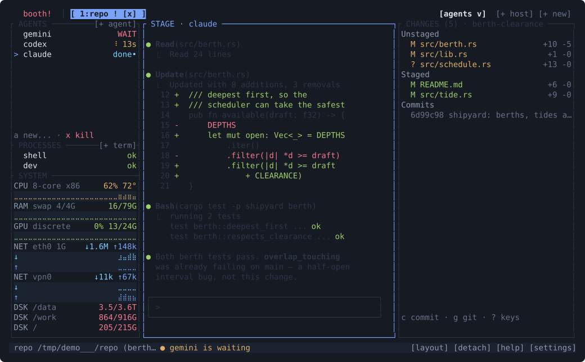
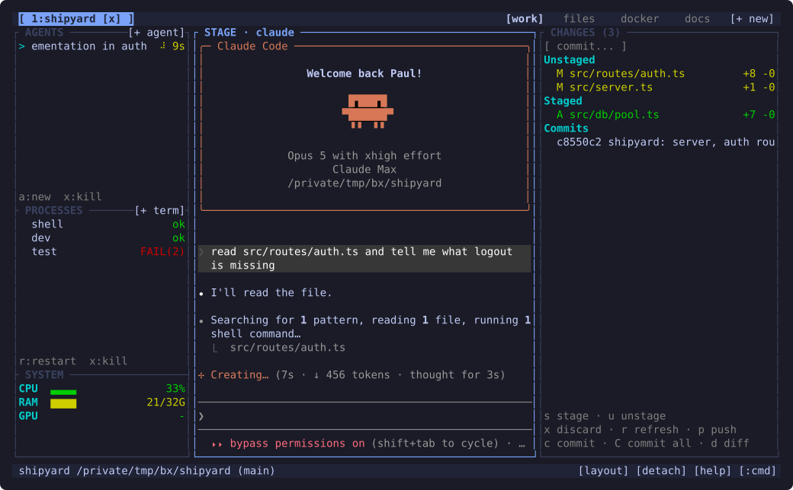
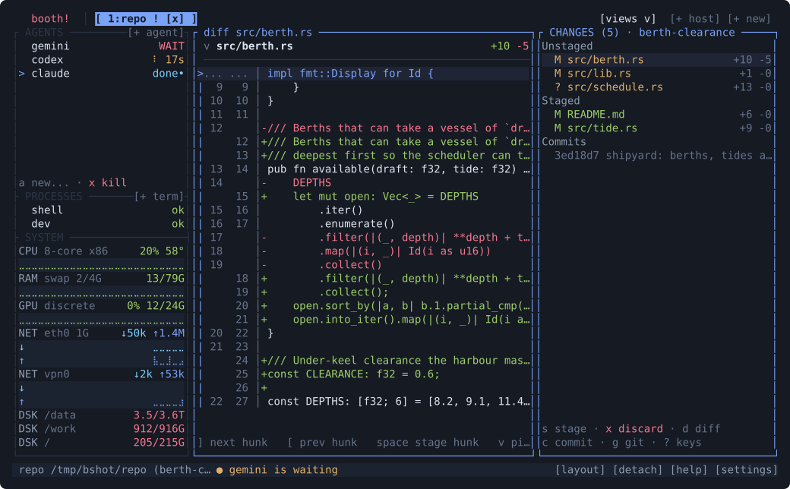

butai
Run six coding agents without losing track of any of them.
butai is a terminal multiplexer — think tmux — with one fixed screen built around the loop you actually run: start agents, watch your server and tests, read the diff, commit. Each project is a tab. Each agent tells you whether it's working, finished, or waiting on you.
It all belongs to a background daemon, so closing the terminal doesn't stop anything. Reattach later, or over SSH from a different machine, and the agents are still going and your unsaved editor buffer is still there.

What's on screen
One frame, and it never rearranges itself.
There are no splits to manage and no layout to rebuild. Every project gets the same three regions, so you learn the geography once:
Left rail
AGENTS — every agent you've started, with a live spinner and
elapsed time while it runs, needs-you when
it stops to ask something, done when it
finishes. PROCESSES — your dev server and test watcher, reading
ok or FAIL(2). SYSTEM — cpu, ram, gpu.
Centre stage
The one big surface, holding whatever you selected from a rail: an agent you're steering, a process log, a file, or a diff. Full terminal fidelity — agents are ordinary CLIs in real PTYs, so Claude Code looks exactly like Claude Code.
Right rail
CHANGES — git, permanently. Staged and unstaged files with line counts, recent commits, and the keys to act on them without opening another tool.

The loop
What using it actually looks like.
-
Open the project
Type
butaiin any directory. It opens a tab for that project and — if there's a.butai.toml— brings your dev server and test watcher up like a Procfile and spawns the agents you always start. -
Dispatch an agent
Alt+Enter opens the picker — Claude Code, Codex, Gemini CLI, aider, or anything else you've configured. It lands in the AGENTS rail. Enter puts it on the stage and you talk to it normally.
-
Go do something else
Start a second agent on another project, or read code. The rail keeps score for all of them. An agent that stops to ask a question badges its workspace tab, so you notice from a different project instead of discovering it twenty minutes later.
-
Review and commit
Alt+g jumps to CHANGES, d puts the diff on the stage, s stages a file, c commits — or C to stage everything and commit in one step, which is what you wanted most of the time anyway.
-
Close the laptop
Ctrl+b d detaches. The daemon keeps every agent, process, and unsaved buffer alive. Reattach here or over SSH from another machine and it's mid-sentence where you left it.

The daemon and its API
The terminal UI is a client, not the program.
Everything real lives in the daemon: the PTYs, the agent processes, git status, the telemetry sampler. It renders each client's screen headlessly and ships styled-cell diffs, which means a client forwards keystrokes and paints cells — it never needs its own terminal emulator.
Two protocols share one Unix socket. A framed streaming protocol carries live terminal screens; a Docker-style REST API serves the structured state — workspaces, agents, processes, git, gauges — for clients that want to draw it natively.
# everything the workbench shows, as JSON curl --unix-socket $XDG_RUNTIME_DIR/butai/butai.sock \ http://localhost/v1/workspaces # start an agent in workspace 1 curl --unix-socket $XDG_RUNTIME_DIR/butai/butai.sock \ -X POST -d '{"agent":"claude"}' \ http://localhost/v1/workspaces/1/agents
The reference client
The repo ships web/: a complete browser client, written as
framework-free ES modules with no build step at all. It draws the whole
workbench — tabs, rails, file tree, diffs — from the REST API using plain
Web Components, and streams the one pane that genuinely needs to be live
over a WebSocket.
It's there for three reasons, and you can use it for any of them:
1 Use butai from a browser
Run the bundled server.py bridge — stdlib only, no
dependencies — and you have butai in a tab. Forward the socket over SSH
and it works against a remote host with no server-side changes.
2 Copy it
It's the worked example for building your own client. The client-authoring guide is self-contained — architecture, every endpoint, the JSON model, live updates, and a UI storyboard — so you can build one without reading butai's source at all.
3 Proof the API is real
The daemon is never modified for the web client. If a whole GUI can be built on the socket without touching the server, the API is genuinely complete — and any other client speaks that same one.
butai's license is file-level and reaches butai's own files only — not yours, and linking is not what triggers it. Your client carries any license you like, including a proprietary one.
Get it
- What that does
- Detects your platform, downloads the matching prebuilt binary, checks it against the published SHA256, and drops
butaiin/usr/local/binor~/.local/bin. No runtime, no dependencies — it's a single static-ish binary. Prefer to read it first? It's 150 lines of POSIX sh. - Platforms
- Linux (x86_64, aarch64) and macOS (Apple silicon, Intel). Not Windows — the client-to-daemon transport is built on Unix domain sockets.
- From source
cargo install --path crates/butaifrom a checkout. Rust 1.88+.- Docs
- README · building a client · wire protocol · design notes
- License
- Mozilla Public License 2.0 — file-level copyleft. Changes to butai's own files stay open, and your own code is never covered. Distribute butai's binary and §3.2 asks one thing: tell your users where to obtain butai's source.